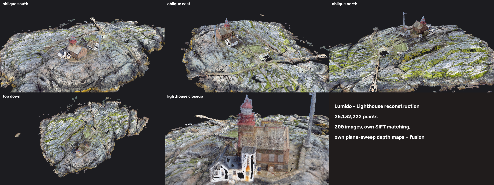

pipeline/step1…step6, run with ./run_all.shH = K(R + t nᵀ/d)K⁻¹; cost = 1 − ZNCC (7×7), mean of best 2 neighbours (occlusion-robust); winner-take-all + parabolic sub-plane refinement; reject low-texture / high-cost pixels; speckle filter removes small blobs (moving water).findEssentialMat, undistort, warpPerspective, box filters, filterSpeckles| Cameras registered | 200 / 200 in one model |
| Sparse points | ~104,000, mean reprojection error 0.91 px |
| Focal length | EXIF 1281.6 px → refined 1290.6 px (0.7 %) |
| GPS agreement | median 2.2 m camera-to-GPS (drone GPS accuracy) |
| Depth maps | 198 × (1200×900), in outputs/depth_maps/ |
| Dense cloud | 25.1 M points, 6 cm spacing, 261×156×36 m, dense_cloud.ply |
| Runtime | ≈ 45 min total on laptop CPU |
